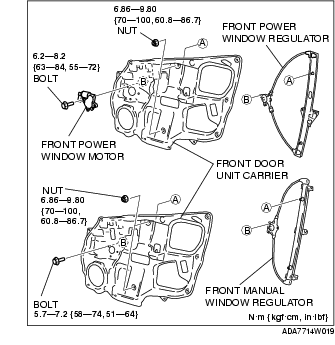

Front door unit removal/installation
1. Remove the front door glass. (See FRONT DOOR GLASS REMOVAL/INSTALLATION.)
2. Remove the inner handle. (See INNER HANDLE REMOVAL/INSTALLATION.)
3. Remove the front door speaker. (See DOOR SPEAKER REMOVAL/INSTALLATION.)
4. Disconnect the power window motor connector and front door lock actuator connector.
5. Remove the front door harness from the front door unit.

6. Remove screws A and the fastener.
7. Remove screw B, then disengage the front door actuator tab from the front door unit.
8. Pull the front door unit slightly outward, and while keeping the front power window regulator or front manual window regulator from catching on the front door, remove the door unit from the door.
9. Pull out the inner handle cable and door lock knob cable from the hole.
10. For vehicles with the power window system, remove the front power window motor and the front power window regulator. For vehicles with the manual window system, remove the front manual window regulator.

11. Install in the reverse order of removal.